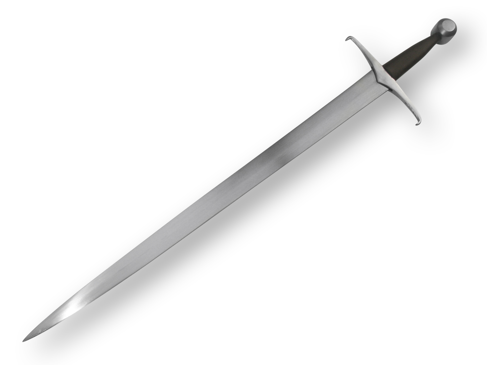
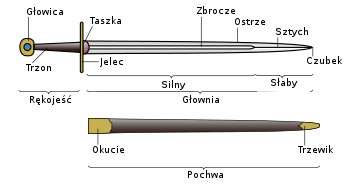
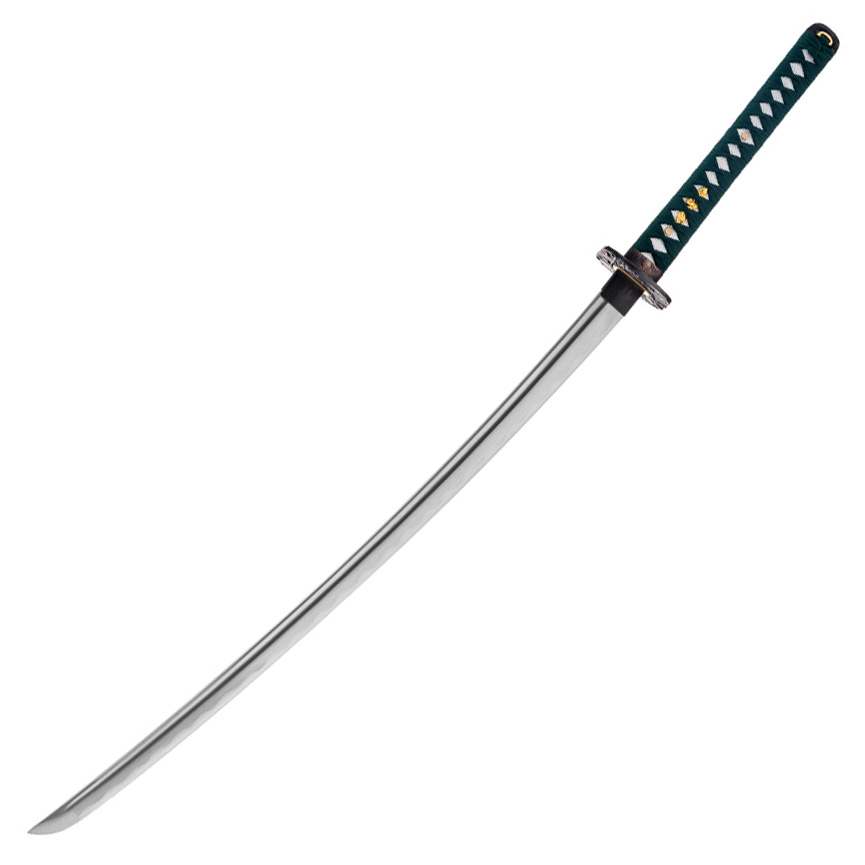
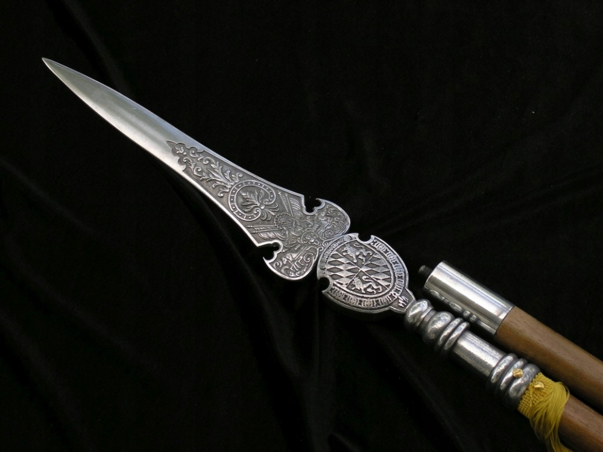
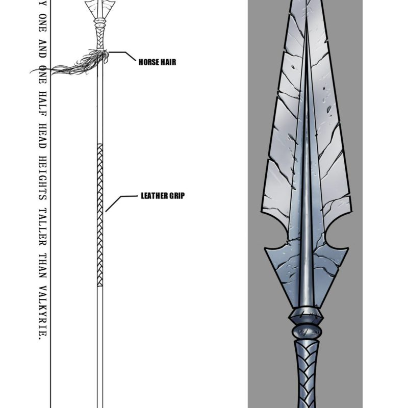
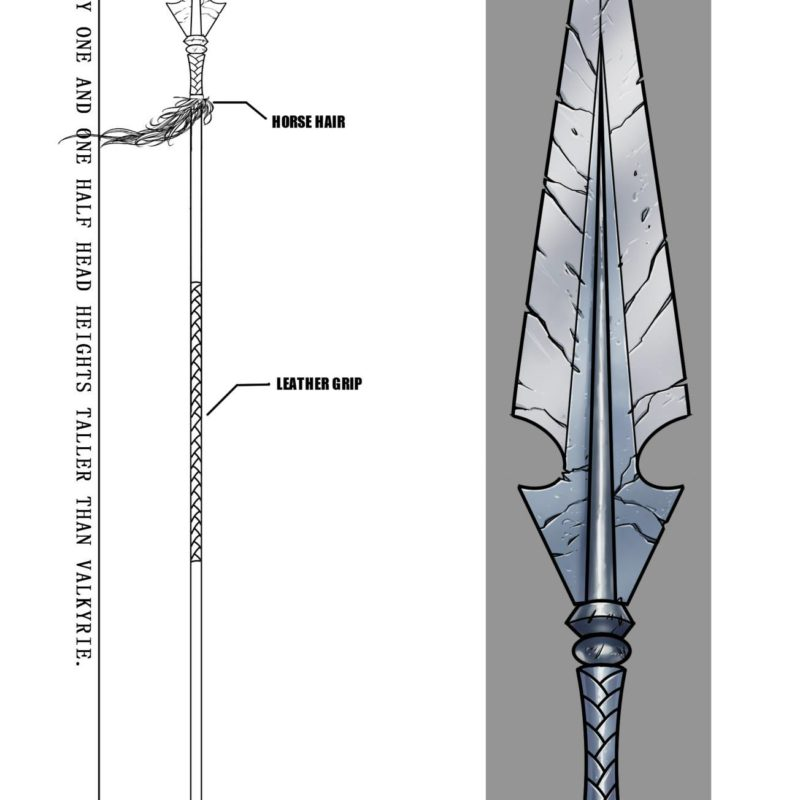
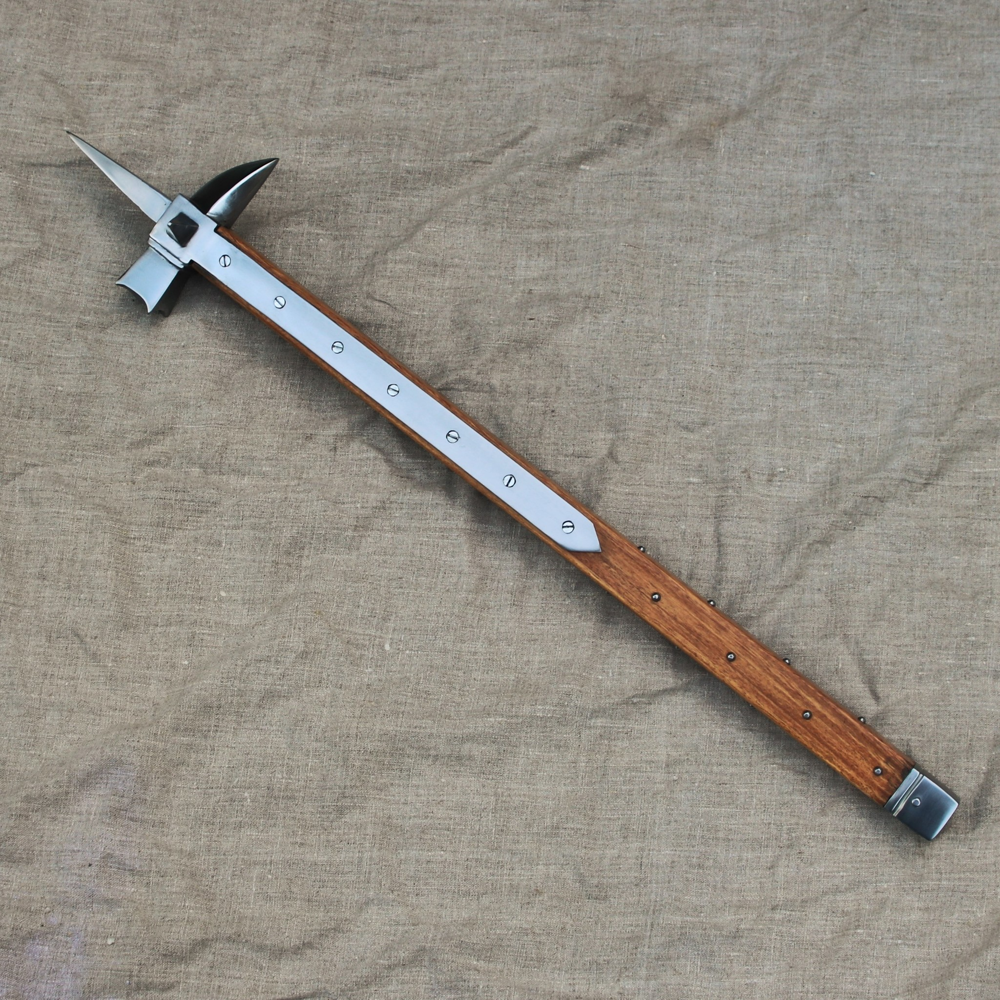

Miecz europejski jednoręczny - Zasadniczą częścią miecza jest obosieczna głownia, której koniec trzpienia zakuwany jest na głowicy. W konstrukcji głowni często stosowane są takie elementy jak: grań, ość, zbrocze, bruzdy, strudziny. Trzpień głowni osłonięty jest okładzinami (najczęściej drewnianymi oprawionymi w skórę) tworząc trzon rękojeści. Miecz jest jedną z najstarszych broni sieczno-kolnych. Pierwsze miecze, wykonywano z brązu na terenie Chin. Początkowo, w Europie dominującą konstrukcją były miecze jednoręczne, używane wespół z tarczą. W średniowiecznej Europie, miecze stały się symbolem stanu rycerskiego. Powstał kult miecza – z narzędzia stał się sacrum, wierność przysięgano na miecz
Miecz europejski jednoręczny - Zasadniczą częścią miecza jest obosieczna głownia, której koniec trzpienia zakuwany jest na głowicy. W konstrukcji głowni często stosowane są takie elementy jak: grań, ość, zbrocze, bruzdy, strudziny. Trzpień głowni osłonięty jest okładzinami (najczęściej drewnianymi oprawionymi w skórę) tworząc trzon rękojeści. Miecz jest jedną z najstarszych broni sieczno-kolnych. Pierwsze miecze, wykonywano z brązu na terenie Chin. Początkowo, w Europie dominującą konstrukcją były miecze jednoręczne, używane wespół z tarczą. W średniowiecznej Europie, miecze stały się symbolem stanu rycerskiego. Powstał kult miecza – z narzędzia stał się sacrum, wierność przysięgano na miecz
Miecz Japoński katana - katana jest bronią o jednosiecznej, zakrzywionej (w różnym stopniu) głowni (o długości powyżej 60 cm), zakończonej ściętym sztychem (kissaki).
- Ze względu na zakrzywioną i jednosieczną głownię, katana pod względem konstrukcyjnym najbardziej zbliżona jest do szabli
- Głownia miecza wytwarzana było przez płatnerza (katana-kaji). W ciągu wielu dni kucia, a następnie zgrubnego szlifu strugami nazywanymi sen, następnie (opcjonalnie) wykonywano zbrocze (bo-hi) (trwa to ok. 3 dni). Następnie ostrze hartowano.
- Do wykonania katan najwyższego gatunku do tej pory używa się unikatowej stali. Produkuje się ją 2-3 razy w roku z żelaza wypłukiwanego w postaci czarnego „piasku” pochodzącego z górskich strumieni. Proces ten polega na wytapianiu żelaza (przez trzy doby, w specjalnym piecu) z węglem drzewnym co nadaje stali specyficzne właściwości.
- Stal powstała z tego wytopu nazywa się tama-hagane.
Część stali kruchej i twardej używa się na ostrza, część twardej, lecz wytrzymałej na warstwę pod ostrzem, część plastycznej na rdzeń.
Włócznia – ogólna nazwa długiej prostej broni drzewcowej. W zależności od ciężaru, rozmiarów, kształtu i rodzaju ostrego zakończenia (grotu), włócznia mogła służyć do miotania na
odległość (broń rzutna) lub do walki wręcz.
W związku z uniwersalnością i powszechnością tego rodzaju broni trudno jest jednoznacznie ustalić jej pochodzenie.
Włócznia jest jednym z najstarszych (obok maczugi i łuku) rodzajów broni, zarówno myśliwskiej, jak i wojennej.


Młot wojenny - jedna z najstarszych form broni obuchowej używana od czasów prehistorycznych do średniowiecza.
Składał się z jednego lub dwóch bijaków o różnym kształcie, kamiennych, później metalowych, osadzonych na trzonie, zwykle drewnianym o długości 60 cm – 2 m.
- Od młota bojowego wywodzą się prawdopodobnie różne typy młotów rycerskich (np. nadziak), ulepszonych w XV i XVI wieku, o ostrych uformowanych bijakach, przystosowanych do walki z przeciwnikiem ubranym w kolczugę.
- Piechota szwajcarska do XVI wieku używała młotów bojowych osadzonych na długich, nawet 2-metrowych drzewcach